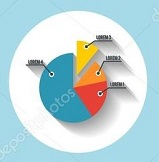

Contesting Candidate
Register for election
Report

View Voters Report
Report
View Contesting candidate Report
Report

View Result Report
The vote is precious.It is the most powerful progresive and non-voilent tool we have in our institute and
we must use it.When we vote we take back our power to choose,to speakup and to stand with those who support us and
eachother to grow together.